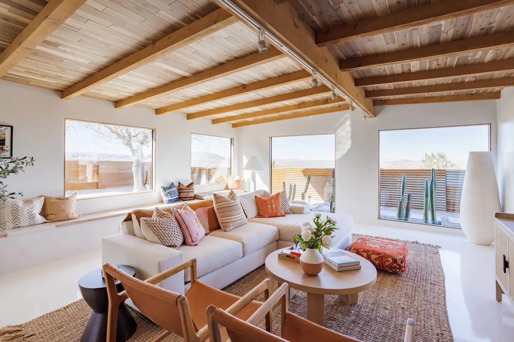
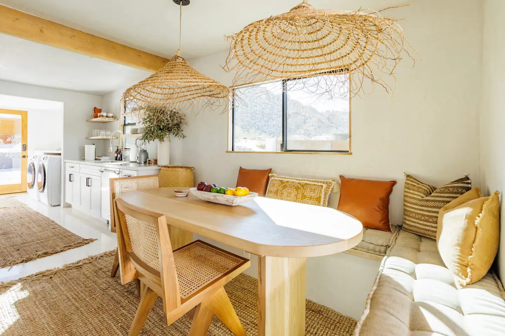
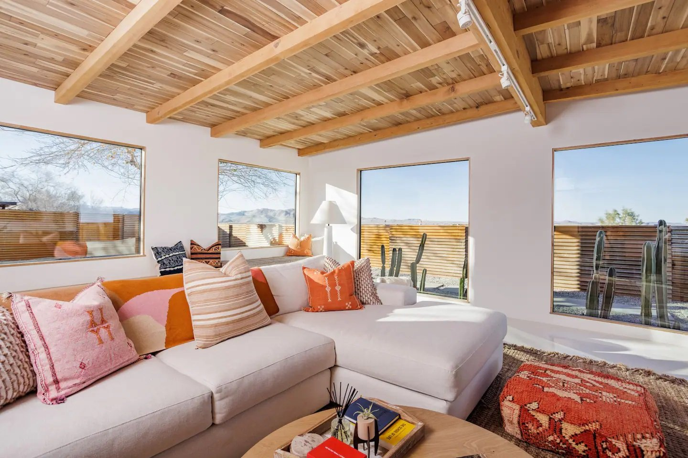
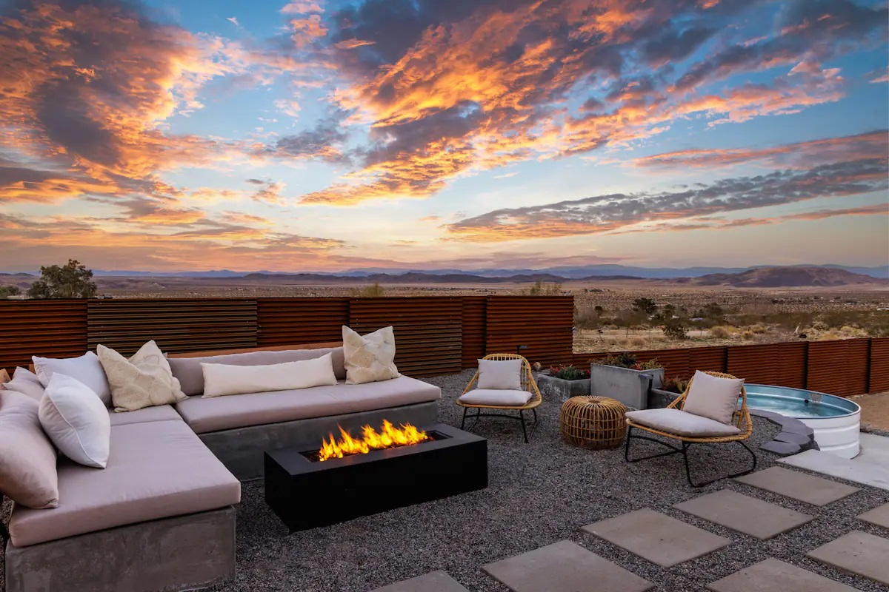
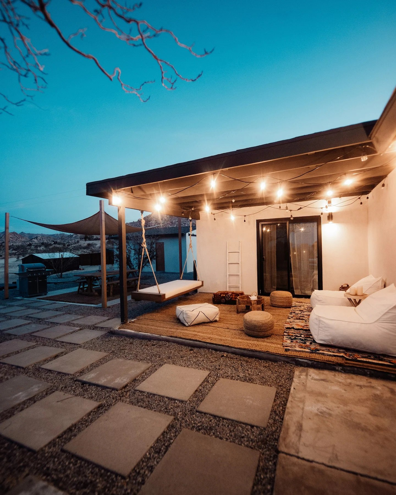
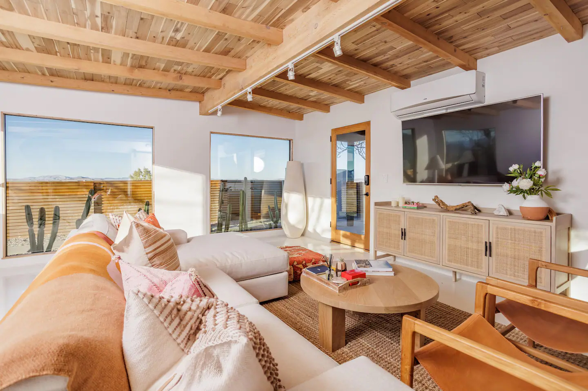

Project Details
Three bedrooms, a desert's worth of sky.
White Feather fits three bedrooms into a tightly restricted and monitored building envelope adjacent to Joshua Tree National Park. The project's constraints became its defining logic: a compact, efficient plan that treads lightly on the high desert landscape.
Construction materials emphasize recycling and reuse throughout. Siding and structural elements were salvaged from a dilapidated local structure, allowing significant materials in good condition to find a second life — reducing waste and embedding a sense of history into the new building.






